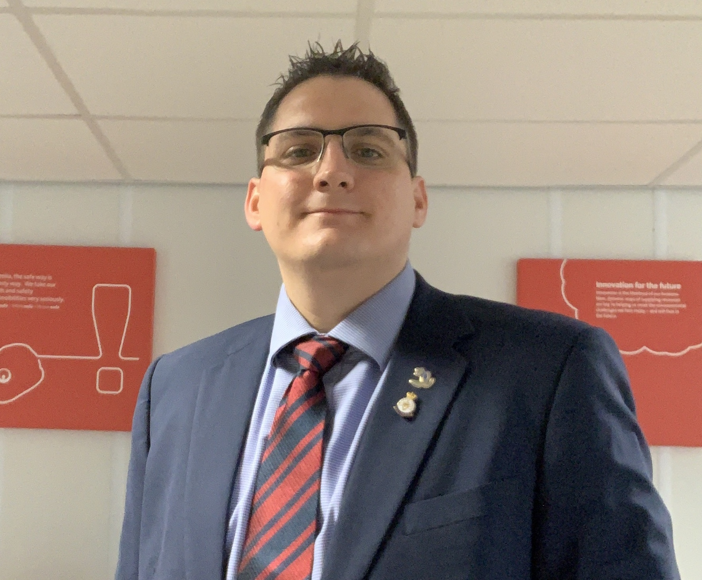

Python Portfolio of Jamie Eames
Candidate for the Degree of Master of Science - Geographical Information Systems at the University of Leeds

About Jamie
Jamie Eames was born in 1990 and was raised in Crowborough, East Sussex; near both the beautiful South Downs National Park and Ashdown Forest, in England.
The oldest of three children, he was very close to his Grandfather Raymond; whose influence sparked Jamie's interest in the Army.
Jamie first became fascinated with maps in his early teens, when he joined the Army Cadets. This interest led to his joining the Army at sixteen years old
recruited to become a Geographic Technician in his Grandfather's former unit The Royal Engineers.
During his seven years of service Jamie used his skills to support the UK and US led mission in Afghanistan; serving in the Regional
headquarters for Helmand and Nimruz Provinces. On his return from Afghanistan he supported the final planning phases of the London Olympic Games, just weeks
from the start of the event.
In January 2014 he left the Army and started the next chapter of his career as a Business Performance Analyst for a multinational Environmental Services company
which holds many local authority waste contracts across the UK; of which he has supported the deployment of several. He is currently working in the GIS department
as a Logistics Data Analyst.
Jamie discussed his academic future
with his grandfather early in the summer of 2017, sadly this would be the last thing they discussed; Raymond would pass away a few days later and Jamie decided to submit
his university application soon afterwards.
Jamie lives in Cambridgeshire and is currently a Postgraduate student at the University of Leeds, where he his studies around his work. His focus is on GIS in Planning.
Hobbies and Interests
Jamie's interests are many and varied:
- Football Refereeing
- Karate
- SCUBA Diving
- Running
- Cooking
About the Website
This website was created in fulfilment to the assignment requirements, as part of a module of Python Programming. It showcases the code he has written
for an Agent Based Modelling project, describing the code and demonstrating it's outputs.
I hope you enjoy my work. If you would like to share with me ideas for improvement or discuss professional opportunities, I can be contacted at:
jeamesgis@gmail.com